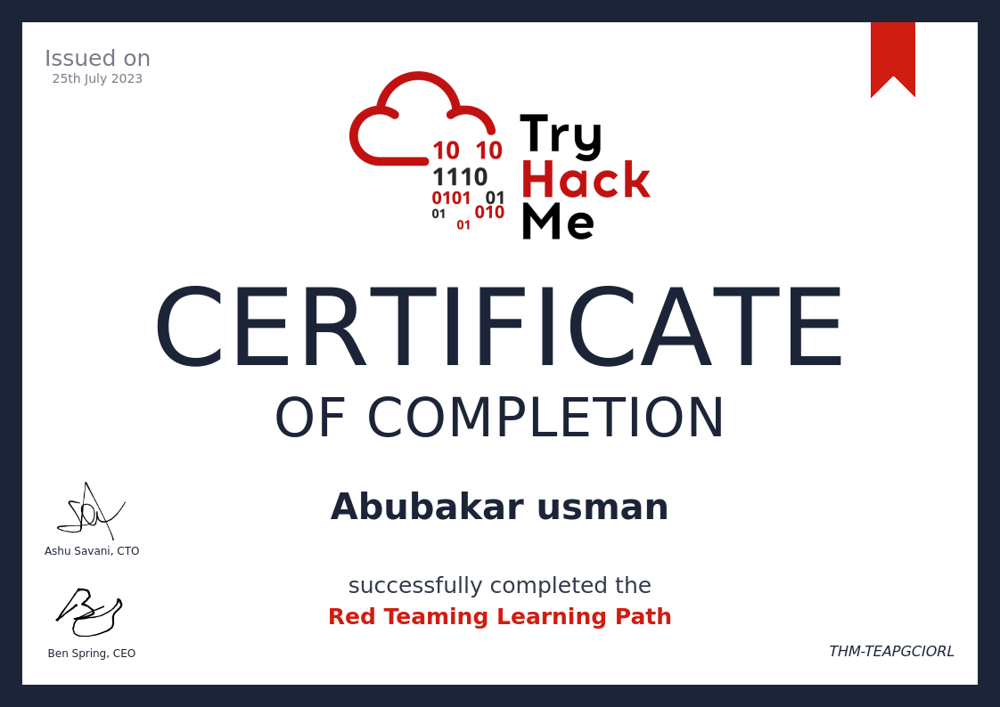

Junior Penetration Tester Certificate

Welcome to my Junior Penetration Tester Certificate! This certification represents my expertise in penetration testing techniques and methodologies. I acquired this certificate from TryHackMe, showcasing my practical skills in identifying and fixing security vulnerabilities in various systems.
Red Teaming Certificate

Presenting my Red Teaming Certificate! This certification signifies my advanced knowledge in offensive security techniques, including ethical hacking, network exploitation, and social engineering. Achieved through rigorous training on TryHackMe, this certification demonstrates my ability to simulate real-world cyber attacks for improving security defenses.
CompTIA Security+ Certificate

Introducing my CompTIA Security+ Certificate! This globally recognized certification validates my knowledge in cybersecurity essentials, network security, and risk management. By earning this certification, I demonstrate my expertise in securing networks, systems, and applications, ensuring a strong foundation in the field of cybersecurity.
Fundamentals of Web Security Certificate

Behold my Fundamentals of Web Security Certificate! This certification showcases my understanding of web application security principles and best practices. Acquired through comprehensive training, it demonstrates my ability to identify and mitigate vulnerabilities in web applications, ensuring a secure online environment for users and businesses.
Pre Security Certificate
My Pre Security Certificate! This certification reflects my foundational knowledge in security fundamentals. It serves as the basis for my advanced certifications and expertise in the cybersecurity domain.
Introduction to Cyber Security Certificate

Here's my Introduction to Cyber Security Certificate! This certification marks my entry into the fascinating world of cybersecurity. It covers essential concepts and practices, laying the groundwork for my cybersecurity journey.